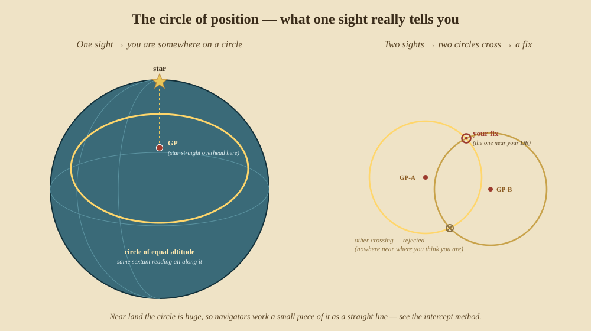
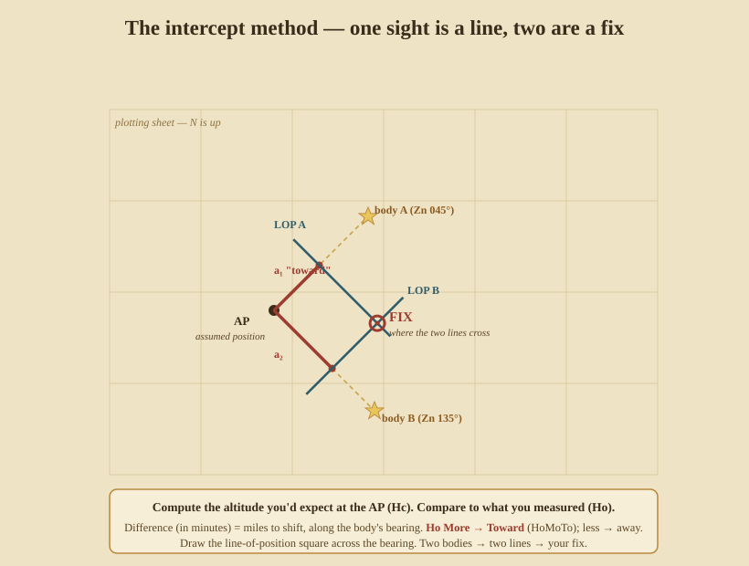

The Modern Sight
The methods of Parts II and III each answered one coordinate at a time and leaned on the other being known. The nineteenth century found something cleaner: treat every sight of any body — Sun, Moon, planet, or star — the same way, as a line you are somewhere on. Cross two lines and you have a fix, with no assumption about which coordinate you’re solving. This is how celestial navigation has been done ever since.
12. What one sight really tells you — the circle of position
A single corrected altitude does not give a point. It gives a circle. The body stands directly over one spot on Earth at the instant of your sight — its geographical position (GP) — and everyone who measures the same altitude lies on a circle centred on that GP. You are somewhere on that circle of equal altitude.

Take a second body and you get a second circle. Two circles cross at two points — and since those points are usually thousands of miles apart, your dead reckoning tells you instantly which one is you. That intersection is your fix.
Who & when. The insight was an accident. In 1837 the American captain Thomas Sumner, uncertain of his position approaching the Irish coast in thick weather, worked one sight three times for three assumed latitudes, plotted the three answers — and found they fell on a straight line that ran through a lighthouse he was looking for. The Sumner line was the first line of position.
13. The intercept method — Marcq St-Hilaire
Near land the circle of position is so vast that a short arc of it is, for all purposes, a straight line — a line of position (LOP). The trick is to draw that short piece without plotting the whole circle. The intercept method does it by comparison: guess a nearby position, compute the altitude you would measure from there, and see how your real measurement differs.

The steps:
- Assumed position (AP). Pick a convenient position near your DR (whole degrees of latitude, and a longitude that makes the hour angle whole, so the tables are easy).
- Reduce the sight. From the almanac get the body’s GHA and declination at the
exact Greenwich time; combine GHA with your AP longitude to get the local hour
angle (LHA). Then solve the navigational triangle (Part III) for the
computed altitude Hc and the azimuth Zn:
sin Hc = sin L · sin d + cos L · cos d · cos LHA. - Intercept. Compare your measured Ho with the computed Hc. The difference, in minutes of arc, is a distance in nautical miles. Ho More → Toward the body (“HoMoTo”); Ho less → away.
- Draw the LOP. From the AP, lay off the azimuth
Zn, step the intercept distance toward or away, and draw the line of position square across the azimuth. You are on that line. - Fix. Two bodies give two LOPs; where they cross is your position.
Worked example. AP at latitude 34° N, longitude chosen so LHA = 45°; almanac declination d = 20° N; measured Ho = 48° 06′.
sin Hc = sin34°·sin20° + cos34°·cos20°·cos45°= (0.5592×0.3420) + (0.8290×0.9397×0.7071) = 0.1912 + 0.5508 = 0.7420- Hc = 47° 54′. Azimuth works out to Zn ≈ 262° (nearly due west).
- Intercept = Ho − Hc = 48° 06′ − 47° 54′ = 12′ = 12 nautical miles, Toward.
So from the AP you draw a line toward bearing 262°, measure 12 miles along it, and rule your LOP at right angles there. Do the same for a second body and cross them.
Who & when. The French naval officer Marcq de Saint-Hilaire published the intercept (“méthode du point rapproché”) in 1875. Combined with printed sight-reduction tables (Ageton’s HO 211, then HO 214, 229, 249) that replaced the trigonometry with look-ups, it became — and remains — the standard method taught to every ship’s officer.
14. The running fix — one body, two moments
You can cross two LOPs from the same body if you wait. Take a sight, note the time; sail on; take a second sight of the same body later. Because you’ve moved, the two lines aren’t parallel-useless — you advance the first LOP along your course by the distance run between the sights, then cross it with the second. That is a running fix, and it’s how a lone Sun serves all day when no other body is up. (The coastal version, using one landmark, is in Part VI.)
15. A day’s work in navigation
The classic routine strings the whole book together into one day at sea:
- Dawn — the morning stars. In the brief twilight when both horizon and bright stars are visible, shoot three or four stars round the compass and cross their LOPs for a fix.
- Forenoon — a Sun line for longitude (a time sight, or a Sun LOP by the intercept method).
- Noon — the meridian altitude for latitude (Part II), and a check of longitude at LAN.
- Afternoon — another Sun line, run up to cross the morning’s line (a running fix).
- Dusk — the evening stars, another star fix.
- Through it all — dead reckoning carried forward between fixes, so you always have a working position to shoot from and to sanity-check the sky against.
Dead reckoning is the thread that holds the day together — and it is a craft of its own. That is Part V.